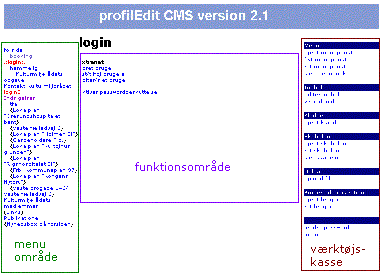

Administrationssiderne er opdelt i 3 områder. Til venstre er menuen, som muliggør navigation mellem de enkelte sider. Midten er et funktionsområde, hvor man enten kan vælge mellem forskellige funktioner, som hører til den enkelte side eller man kan indtaste information/tekst. Til Højre er det sidste område, som er en slags værktøjskasse. Her er generelle funktioner som enten er til rådighed for alle sider, eller som ikke hører til en side.
Denne opdeling bruges ikke altid på funktionelle sider, hvor man er i gang med at udfører en handling. Dette er fx editering af teksten på en side.